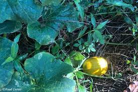

html
Sri Lankan Kakiri Curry
Sri Lankan Kakiri Curry

Ingredients

- Kakiri (Yellow cucumber)
- 2-3 green chili sliced lengthwise
- 1 onion sliced
- 1 sprig curry leaves
- 1inch piece pandan leaf/(rampa)-optional
- 1 tspn red chili powder
- ¼ tsp turmeric powder
- 1 tsp raw curry powder
- 1/2 tsp mustard seed
- 1 tsp fenugreek seeds
- Piece of cinnamon
- Salt to taste
- 1/2 cup thick coconut milk
- 1 cup thin coconut milk
Recipe
- 01. Wash the yellow cucumber (Kakiri), and set aside. Remove the cucumber's top and bottom halves.
After that, cut it into bite-sized pieces. When cutting yellow cucumber, remember to remove the seeds.(kakiri)
Put in a pan.
- 02. Toast the spices in a separate pan until golden brown.(red pepper flakes, turmeric powder, and raw spice powder)
- 03. To the pan, add roasted spices, onion, green chili, curry leaf, and all ingredients except mustard seeds and thick coconut milk, along with pieces of Kakiri.
- 04. Mix well. Add salt as per taste. Add thin coconut milk.Cook in medium flame.
- 05. Meanwhile, dry roast the mustard seeds and grind them into a paste. Set aside.
- 06. When the kakiri is done, add the thick coconut milk.
- 07. Adjust salt to taste.
- 08. When the coconut milk begins to boil, remove from the heat and stir well.
After the flame has been turned off, sprinkle the curry with roasted mustard seeds.
Leave it alone.
- 09. After a few minutes, when the hot flame has died down, combine the curry.
It is finished and ready to serve with plain rice.